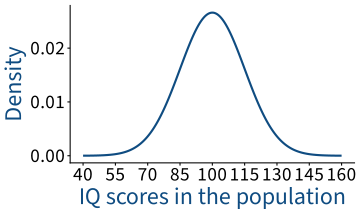
The one-sample t-test
Data Analysis for Psychology in R 1 (2026/27)
Dr. Elizabeth Pankratz (elizabeth.pankratz@ed.ac.uk)
Psychology, PPLS
University of Edinburgh
Welcome back!
Warm-up activity
This week’s learning objectives
When we don’t have access to the population we want to compare our sample to, how can we run a statistical analysis?
What kind of statistical test lets us compare our sample to a specific hypothesised value?
What do we do when we don’t have access to the population?
What do we do when we don’t have access to the population?
Last week, we knew the population that gave us our null distribution:
In real life, we’ll basically never know the population that we want to compare any of our samples to.
???
- Our RQ asked whether bilingual adults had a higher IQ than the general population.
- We knew that in the population, IQ is normally distributed with mean of 100 and standard deviation of 15.
- This let us come up with the null distribution—what sample means would look like if H0 were true—based on properties of the population.
- Real life is basically always like this: we don’t know the true population mean or how variable the population is.
- So we can’t use the population to figure out our null distribution.
- So how do we know what to compare our sample to?
The answer: The t-distribution
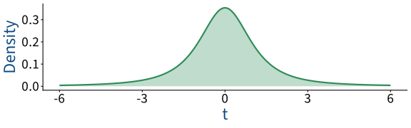
It looks a lot like a normal distribution (overlaid in blue), but it’s less pointy in the middle and fatter at the tails.
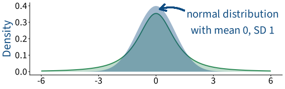
The fat tails put more probability on extreme values, so that we don’t rule them out as much, since after all we don’t know what the population might look like.
The t-distribution has different shapes
All of these are t-distributions with different degrees of freedom (df):
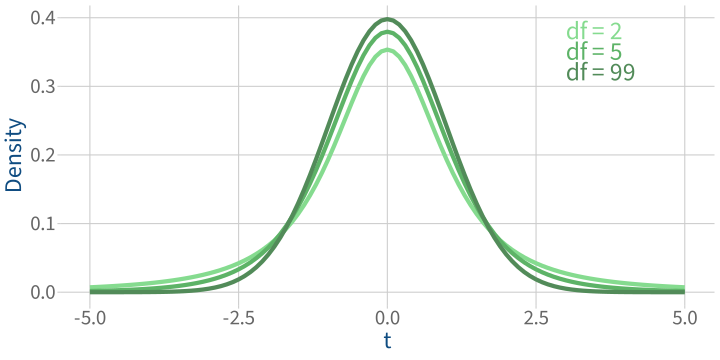
You don’t need to know exactly what df is. Just know that it’s closely related related to sample size:
- if we have a sample size \(n\) of 100,
- then we have 99 degrees of freedom.
- For tests involving t-distributions, the df is always \(n - 1\).
So our sample size determines the shape of the t-distribution that we will use as our null distribution.
Why does it work this way? Because the more data we have, the better a guess we can make about the population.
Let’s see how the t-test works
Let’s see how the t-test works
Recall from last week the five steps of NHST:
- Based on your RQ, define the null and alternative hypotheses.
- Collect sample data and determine the appropriate null distribution.
- Calculate the test statistic for our observed sample.
- Make a decision about whether or not to reject H0.
- Interpret this decision in the context of the RQ.
We’ll go through them one by one as we walk through the logic of a one-sample t-test.
Step 1: Based on RQ,
define H0 and H1
Activity: Match RQs to the appropriate H1
Our RQ this week
RQ: In healthy adults, is average body temperature different from the standard reference value of 37C?
The null hypothesis (H0) is always that any difference or effect we’re interested in does not exist.
- So our H0 here is that average body temperature \(\mu\) is equal to 37C.
- In fancy math notation:
\[ H_0 : \mu = 37 \]
- In plain text:
H0: mu = 37The alternative hypothesis (H1) is that the difference or effect we’re interested in does exist.
- So our H1 here is that average body temperature is not equal to 37C.
- In fancy math notation:
\[ H_1 : \mu \neq 37 \]
- In plain text:
H0: mu != 37Step 2: Gather data and
determine the appropriate
null distribution
This week’s data: Body temperatures
Rows: 50
Columns: 2
$ BodyTemp <dbl> 36.4, 37.4, 37.2, 37.1, 36.7, 37.2, 37.2, 36.6, 36.0, 37.2, 3~
$ Pulse <dbl> 69, 77, 75, 84, 71, 76, 81, 77, 75, 81, NA, 78, 71, 80, 70, 7~Code
mean_temp <- mean(temp_sample$BodyTemp)
temp_sample |>
ggplot(aes(x = BodyTemp)) +
geom_density(linewidth = 0, fill = '#0F4C81') +
geom_vline(xintercept = mean_temp, colour = 'tomato1', linewidth = 2) +
annotate(geom = 'label', x = mean_temp+0.05, y = 0.4, label = paste0('mean:\n', round(mean_temp, 2)), colour = 'tomato1', size = 8, hjust = 0, linewidth = 1)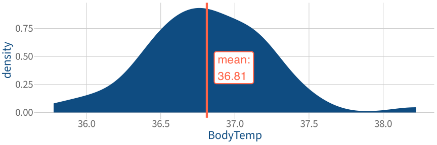
Our key question: How likely would it be to get a sample mean like this one, if H0 were true? (That is, if body temps were truly 37C on average?)
If H0 were true, what would we expect to see?
If H0 is true—if body temperatures in reality do have a mean of 37C—then:
- The difference between our sample mean and the value 37 should be pretty small, close to zero.
- But the sampling process is random, so we would also expect to observe some differences that are off to either side of zero.
How much variability around zero should we expect, exactly, if the H0 is true?
The answer to that question is the t-distribution:

So do we expect differences of \(\pm\) 2-ish °C?
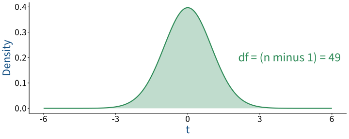
Not degrees Celsius—if H0 were true, we would expect differences of \(\pm\) 2-ish t-values.
- A t-value tells you how many standard errors away from the hypothesised value your sample mean is.
- T-values are useful because they are standardised measures of difference (like a z-score).
You don’t need to know how to calculate a t-value yourself!
R will translate our observed sample mean into a t-value and compare it to this t-distribution for us, using the function t.test().
Step 3: Calculate the test statistic for our observed sample
We’ll let R calculate our sample’s t-statistic
To use the function t.test(), we give it four arguments:
We’ll let R calculate our sample’s t-statistic
We’ll use the function t.test() and give it four arguments:
One Sample t-test
data: temp_sample$BodyTemp
t = -3.14, df = 49, p-value = 0.0029
alternative hypothesis: true mean is not equal to 37
95 percent confidence interval:
36.690 36.932
sample estimates:
mean of x
36.811 Let’s break down this output (1)
data: temp_sample$BodyTemp
t = -3.14, df = 49, p-value = 0.0029Our sample’s t-value is –3.14 (that means it’s three-and-a-bit SEs below the hypothesised population mean of 37).
The null distribution has 49 df (good sense check).
The p-value tells us that, if H0 were true, the probability of observing a t-value of –3 or more extreme, or +3 or more extreme, is .003, or 0.3%.
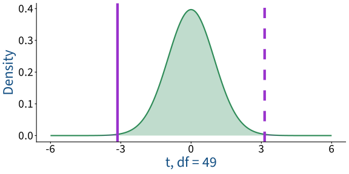
Let’s break down this output (2)
alternative hypothesis: true mean is not equal to 37This line says in words what we wrote earlier as \(\mu \neq 37\).
A non-directional alternative hypothesis, because the RQ didn’t specify a difference in one direction or the other.
95 percent confidence interval:
36.690 36.932This is the range of values within which we are 95% confident that the true population mean body temperature lies. (Careful: not the range of values that, with 95% probability, contains that true value.)
sample estimates:
mean of x
36.811 The mean body temperature observed in our sample is 36.81 degrees C.
This is the value that’s three SEs below the hypothesised population mean of 37.
Step 4: Make a decision about whether or not to reject H0
Make a decision
One Sample t-test
data: temp_sample$BodyTemp
t = -3.14, df = 49, p-value = 0.0029
alternative hypothesis: true mean is not equal to 37
95 percent confidence interval:
36.690 36.932
sample estimates:
mean of x
36.811
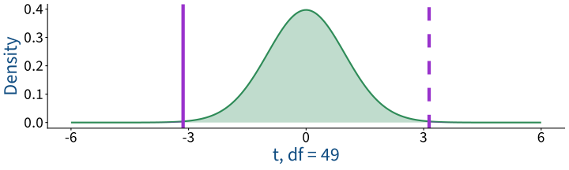
Our significance level, or alpha level, is .05 (or 5%).
Recall: When \(\alpha = .05\), we accept that we will reject H0, even when H0 is true, one time in twenty.
Our p-value .003 is below .05. This means our decision is to reject H0.
Step 5: Interpret decision in the context of RQ
Interpret and report in the context of our RQ
RQ: In healthy adults, is average body temperature different from the standard reference value of 37C?
APA-formatted write-up:
To investigate whether the mean body temperature of healthy humans (which we call \(\mu\)) differs from the commonly thought value of 37°C, we performed a one-sample t-test of \(H_0 : \mu = 37\) against \(H_1 : \mu \neq 37\) at the 5% significance level.
The sample results (M = 36.81, SD = 0.43) provided strong evidence against the null hypothesis (\(t\)(49) = –3, \(p\) = .003, two-sided). We therefore conclude that the mean body temperature of healthy humans differs from 37°C and, with 95% confidence, is between 36.69°C and 36.93°C.
Note that this difference is statistically significant, but it’s not practically significant: no one will rewrite the medical textbooks to change 37 to 36.81!
In Block 3, you’ll learn a way to estimate how practically significant a difference might be.
What questions do you have right now?
VERY IMPORTANT: Lectures in Sem 2
The day and time of DAPR1 lectures in Semester 2 is different from Semester 1.
Starting on January 12, 2027, all Semester 2 lectures are on Tuesdays from 13:10 to 14:00.
The location stays the same, and Elizabeth will be your lecturer for all of Block 3.
Thank you all for your hard work this semester.
Umberto, Josiah, and I wish you a restful winter break and a lovely new year when it comes.
Back matter
Revisiting this week’s learning objectives
When we don’t have access to the population we want to compare our sample to, how can we run a statistical analysis?
- We rephrase our problem into a comparison between our sample and a specific hypothesised value.
- Our null distribution becomes a t-distribution (which has slightly fatter tails, essentially meaning that we assign slightly greater probability to more extreme values. We do this because we don’t have access to the population, so we don’t have as much information that we could use to rule those extreme values out).
- The t-distribution looks more and more like a normal distribution, the bigger our sample is (which should make some sense, because as we get more data, we can be more precise about what kinds of values are likely).
What kind of statistical test lets us compare our sample to a specific hypothesised value?
- A one-sample t-test.
Distributions from warm-up Wooclap (1)
Uncollapse code for the basic standard normal distribution plot.
Code
dapr1blue <- '#0F4C81'
m <- 0
sd <- 1
nx <- seq(m-4*sd, m+4*sd, length.out = 1000)
p_stdnorm <- tibble(
x = nx,
n_dens = dnorm(nx, m = m, sd = sd)
) |>
ggplot(aes(x = x, y = n_dens)) +
geom_line(linewidth = 1.5, colour = dapr1blue) +
labs(
y = 'Density',
x = 'Standard normal distribution'
) +
theme_classic() +
theme(
panel.grid = element_blank(),
text = element_text(family = 'Source Sans 3', size = 24),
axis.title = ggplot2::element_text(color = dapr1blue)
) +
scale_x_continuous(breaks = seq(
(m - 4*sd), (m + 4*sd), by = sd)
) +
NULLUncollapse code for the following plot with the z-statistic and shaded area.
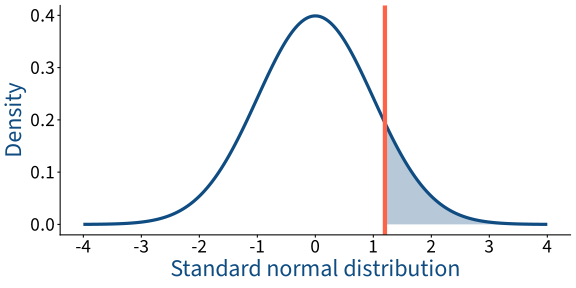
Distributions from warm-up Wooclap (2)
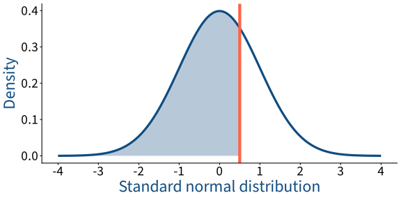
Distributions from warm-up Wooclap (3)
Code
z <- abs(1.1)
p_stdnorm +
geom_ribbon(
aes(
x = ifelse(x <= -z, x, NA),
ymin = 0, ymax = n_dens),
alpha = 0.3, fill = dapr1blue
) +
geom_ribbon(
aes(
x = ifelse(x >= z, x, NA),
ymin = 0, ymax = n_dens),
alpha = 0.3, fill = dapr1blue
) +
geom_vline(xintercept = -z, colour = 'tomato1', linewidth = 2, linetype = 'dashed') +
geom_vline(xintercept = z, colour = 'tomato1', linewidth = 2) +
NULL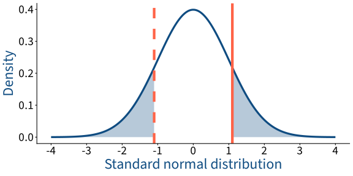